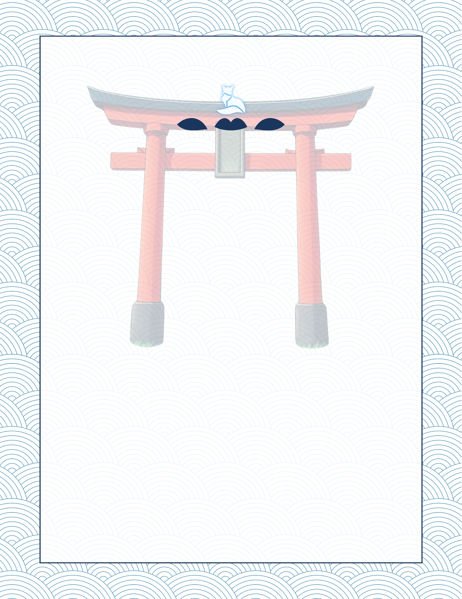

🎯 Evaluación Oficial JLPT
Simulador de Exámenes JLPT
Practica con los Exámenes Oficiales Muestra de Japón (N5 a N1) con temporizador, cronómetro y desgloses detallados.
1. Selecciona tu Nivel JLPT:
2. Selecciona la Versión del Examen:
JLPT Examen
Sección 1 de 3: Vocabulario
Pregunta 1 de 10
⏱️ Tiempo Restante:
00:00
Puntuación Global
0 / 0
0%
Desglose por Secciones
🔍 Revisión Detallada de Preguntas
⛩️ Inicio del Examen JLPT
Evaluación Oficial por Secciones📋 Estructura y Reglas del Examen:
El examen está dividido en 3 secciones oficiales:
- 1 🔤 Vocabulario (文字・語彙)
- 2 📖 Gramática y Lectura (文法・読解)
- 3 🎧 Comprensión Auditiva (聴解)
☕ Descanso entre Secciones: Al terminar cada sección habrá 15 minutos de descanso. Los primeros 2 minutos son obligatorios, tras los cuales podrás omitir el descanso restante y pasar a la siguiente sección.
☕
Tiempo de Descanso Oficial
¡Has completado la Sección 1!
⏱️ Tiempo Restante de Descanso:
15:00
⏳ Tiempo obligatorio de descanso: 02:00 restantes.
🎯 Siguiente Sección:
Sección 2: Gramática y Lectura (文法・読解)

N4
日本語能力認定書
CERTIFICADO
JAPANESE-LANGUAGE PROFICIENCY TEST
氏名
Nombre
SATOU UTSUJI
生年月日 (y/m/d)
Fecha de nacimiento
1993/09/26
受験地
Lugar del examen
イギリス U.K.
上記の方が、2019年12月に実施された日本語能力試験（JLPT）のN4レベルに合格したことを証明するものです。この試験は、日本語への入り口である「日本語のとりい財団」によって実施されました。
2020年 1月19日
Por la presente se certifica que la persona arriba mencionada ha aprobado el Nivel N4 del Examen de Aptitud del Idioma Japonés (JLPT) realizado en diciembre de 2019, administrado por la Fundación Nihongo No Torii, Tu portal de acceso al idioma japonés .
日本語のとりい財団
Fundacion Nihongo No Torii
January 19, 2020
日本語の
とりい財
団
N4A210633A
19B6050101-40093